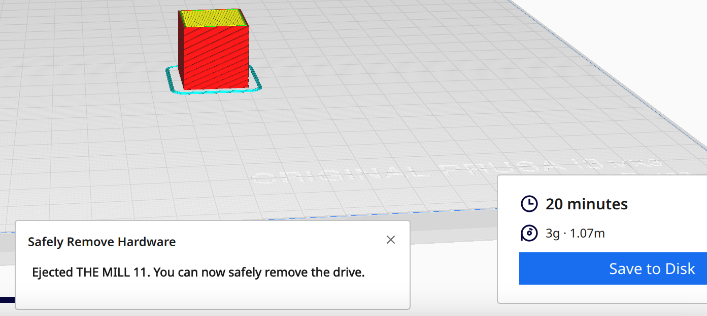
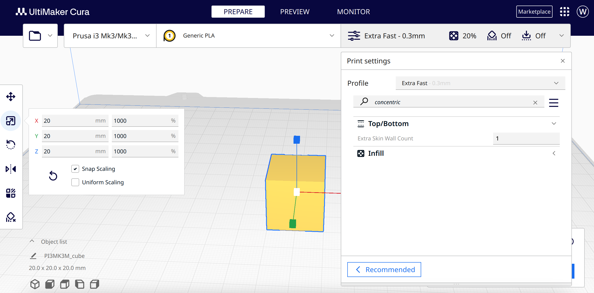
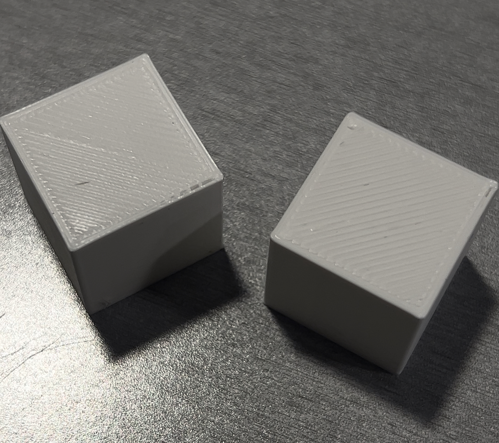

Cubes
File: Cura Cube, file type .3dm
A 2cm cube with the standard "low quality" settings were extra fast, took 8 minutes to print with a height of 20.11mm and width of 20.27 mm
A 2cm cube with the standard "standard quality" settings were fine, took 20 minutes to print with a height of 20.03mm and width of 20.03mm
A 2cm cube with the standard "super quality" settings took 1 hour 8 minutes to print with a height of 20.04mm and width of 20.05mm


As a side note, I had jumped to the tube before coming back to the second cube so I accidentally printed without walls. The plus side is I caught on to this great UX. Shoutout Cura team for making it easy to manually print via USB.

Finally, a 2 cm cube with a concentric top and bottom layer and my favorite print setting from the previous cubes. My favorite setting at the moment is the one that gets done the fastest since this doesn't need to piece together with anything. The standard "low quality" settings were extra fast, took 14 minutes to print with a height of 19.99mm and width of 20.27 mm.

Well, I did it. I'm not sure what it means though. Concentric x 1 on the right, left is one of the standard cubes.
